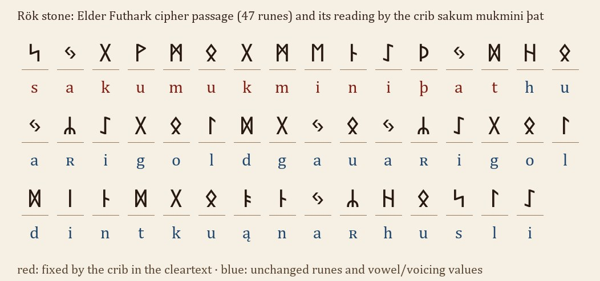

At a glanceExisting decipherment · complete
- The document
- The Rök stone, 28 rows of runes made by Varinn for his dead son Vámóðr (the translation says he “coloured” the runes). Rundata record Ög 136.
- Where
- Rök, Östergötland, Sweden. The rune string used is the published Unicode transcription; no photograph of the stone was examined here.
- The cipher
- Three devices: twig-rune coordinates (aett and position), a shift of one place along the 16-rune row, and an Elder Futhark substitution where voiced and unvoiced consonants share a rune.
- How the keys were found
- The published coordinate table was tested against all 11 codes; the shift key was searched for among all 16 shifts; the Elder key was fixed by a crib, a phrase that opens the passage and also stands in the cleartext (the crib is the published resolution of the opening).
- What it says
- Riddle-like questions about two war-booties, Þjóðríkr (Theodoric), Gunnr's horse and twenty kings, with Thor named in the closing lines of the cipher text.
- Still open
- One damaged line cannot be restored, so the result covers the intact cipher runes. The meaning of the inscription is debated; the letters are not.
- Credit
- Rundata (Uppsala University), via English Wikipedia, supplied the transcription, resolution and translation; Elias Wessén (1958) and Sophus Bugge (1878) are credited there with the readings (not consulted directly). This page checks them.
The stone
Most of the Rök runestone is in the 16 short-twig runes of the Younger Futhark. The carver also uses the 24-rune Elder Futhark and cipher runes, as in the Ingold passage. Sophus Bugge is credited with reading the cipher runes in 1878 (known here only through Wikipedia and Rundata), and they are printed resolved in Rundata record Ög 136, so nothing below is a new reading; it checks the keys against the published transcription.

Layer 1: twig-rune coordinates
The code [a:b] means aett a, counted from the right, position b, over the three rows fuþąrk / hniast / tbmlʀ. All 11 distinct codes give the same letter as the resolution printed in the published transcription; the table itself is the published scheme, tested here, not found here. The coordinate-only lines read ul ni ruþʀ sibi uiauari and, at the end, sakum mukmini þur.
Layer 2: a one-step shift
A 24-rune string reads as nonsense until each rune is moved one place back along the 16-rune row. Trying all 16 shifts and counting four-letter sequences shared with the stone's cleartext, shift +1 wins; it gives sakum mukmini uaim si burin niþ. An 8-rune string is too short to search, and the same shift gives knuą knat.
Layer 3: the Elder Futhark passage
This layer is not a shift: k and g share one rune, as do t and d, and i has three. The passage opens with sakum mukmini þat, which stands in the clear part of the same stone. The 14 runes fix 11 values; runes that are the same in both rows read as themselves. The other 33 read huaʀ i k/gult/d k/ga uaʀi k/gult/d int/d t/d k/guąnaʀ husli, which Rundata normalises as hwaʀ Inguldinga wāʀi guldinn at kwą̄naʀ hūsli. The voiced or unvoiced choice is a question of the Younger-futhark spelling, not of the key.
What remains uncertain
- The transcription's “28 rows” and the short-twig character of the Younger-futhark part are not checked here against the stone.
- The line beginning nuk m… is damaged; the runes are lost on the stone and no key can restore them.
- No photograph of the stone was examined; the rune string is the published transcription, and the glyph-to-letter comparison of the main text with the published transliteration gives 98.84% similarity.
- The meaning of the inscription is debated, including the 2020s proposal tying it to Ragnarök and a sixth-century climate crisis.
Full texts
The transcription and the decryption of every document on this page, so that the reading can be used and checked. Short files are shown here; all are in the repository.
Rök runestone, full inscription
The Rök stone, carved c. 800 by Varinn in memory of his dead son Vámóðr, asks a series of riddle-like questions about two war-booties, Theodoric, Gunnr's horse and twenty kings, and closes by invoking Thor. The cipher runes carry the final stretches, from the Ingold passage on.
Transcription
# Rök runestone (Ög 136), rune-by-rune transcription, as close to the scriptio continua as Unicode allows. # Ciphers in brackets: [coordinates = resolution] or [written string = resolved string]; ¶ = line end. # Source: English Wikipedia 'Rök runestone', section Unicode (CC BY-SA 4.0), compared with the Rundata record Ög 136. ᛆᚠᛏᚢᛆᛘᚢᚦᛌᛏᚭᚿᛏᛆᚱᚢᚿᛆᛧᚦᛆᛧ ᛭ ¶ ᚿᚢᛆᚱᛁᚿᚠᛆᚦᛁᚠᛆᚦᛁᛧᛆᚠᛐᚠᛆᛁᚴᛁᚭᚿᛌᚢᚿᚢ ¶ ᛌᛆᚴᚢᛘᚢᚴᛘᛁᚿᛁᚦᛆᛐᚽᚢᛆᚱᛁᛆᛧᚢᛆᛚᚱᛆᚢᛓᛆᛧᚢᛆᛧᛁᚿᛐᚢᛆᛧ ¶ ᚦᛆᛧᛌᚢᛆᚦᛐᚢᛆᛚᚠᛌᛁᚿᚢᛘᚢᛆᛧᛁᚿᚢᛘᚿᛆᛧᛐᚢᛆᛚᚱᛆᚢᛓᚢ ¶ ᛓᛆᚦᛆᛧᛌᚭᛘᚭᚿᚭᚢᛘᛁᛌᚢᛘᚭᚿᚢᛘ ᛫ ᚦᛆᛐᛌᛆᚴᚢᛘᚭᚿᛆ ¶ ᚱᛐᚽᚢᛆᛧᚠᚢᚱᚿᛁᚢᛆᛚᛐᚢᛘᚭᚿᚢᚱᚦᛁᚠᛁᛆᚱᚢ ¶ ᛘᛁᛧᚽᚱᛆᛁᚦᚴᚢᛐᚢᛘᛆᚢᚴᛐᚢ ¶ ᛘᛁᛧᚭᚿᚢᛓᛌᛆᚴᛆᛧ ¶ ᚱᛆᛁᚦᛁᛆᚢᚱᛁᚴᛧᚽᛁᚿᚦᚢᚱᛘᚢᚦᛁᛌᛐᛁᛚᛁᛧ ¶ ᚠᛚᚢᛐᚿᛆᛌᛐᚱᚭᚿᛐᚢᚽᚱᛆᛁᚦᛘᛆᚱᛆᛧᛌᛁᛐᛁᛧᚿᚢᚴᛆᚱᚢᛧᚭ ¶ ᚴᚢᛐᛆᛌᛁᚿᚢᛘᛌᚴᛁᛆᛚᛐᛁᚢᛓᚠᛆᛐᛚᛆᚦᛧᛌᚴᛆᛐᛁᛘᛆᚱᛁᚴᛆ ¶ ᚦᛆᛐᛌᛆᚴᚢᛘᛐᚢᛆᛚᚠᛐᛆᚽᚢᛆᚱᚽᛁᛌᛐᛧᛌᛁᚴᚢ ¶ ᚿᛆᛧᛁᛐᚢᛁᛐᚢᚭᚴᛁᚭᚿᚴᚢᚿᚢᚴᛆᛧᛐᚢᛆᛁᛧᛐᛁᚴᛁᛧᛌᚢᛆ ¶ ᚦᚭᛚᛁᚴᛁᛆ ᛭ ᚦᛆᛐᛌᛆᚴᚢᛘᚦᚱᛁᛐᛆᚢᚿᛐᛆᚽᚢᛆᚱᛁᛧᛐ ¶ ᚢᛆᛁᛧᛐᛁᚴᛁᛧᚴᚢᚿᚢᚴᛆᛧᛌᛆᛐᛁᚿᛐᛌᛁᚢᛚᚢᚿᛐᛁᚠᛁᛆ ¶ ᚴᚢᚱᛆᚢᛁᚿᛐᚢᚱᛆᛐᚠᛁᛆᚴᚢᚱᚢᛘᚿᛆᛓᚿᚢᛘᛓᚢᚱᚿ ¶ ᛧᚠᛁᛆᚴᚢᚱᚢᛘᛓᚱᚢᚦᚱᚢᛘ ᛭ ᚢᛆᛚᚴᛆᛧᚠᛁᛘᚱᛆ=ᚦᚢᛚᚠᛌᚢ ¶ ᚿᛁᛧᚽᚱᛆᛁᚦᚢᛚᚠᛆᛧᚠᛁᛘᚱᚢᚴᚢᛚᚠᛌᚢᚿᛁᛧᚽᚭᛁᛌᛚᛆᛧᚠᛁᛘᚽᛆᚱᚢᚦ ¶ ᛌᛌᚢᚿᛁᛧᚴᚢᚿᛘᚢᚿᛐᛆᛧᚠᛁᛘ(ᛓ)ᛁᚱᚿᛆᛧᛌᚢᚿᛁᛧ ¶ ᚿᚢᚴᛘ---(ᛘ)-- ᛆᛚᚢ --(ᚴ)(ᛁ)ᛆᛁᚿᚽᚢᛆᛧ-ᚦ... ...ᚦ... × ᚠᛐᛁᛧᚠᚱᛆ ¶ ᛋᛃᚷᚹᛗᛟᚷᛗᛖᚿᛇ[3:3 = ᚦ]ᛃᛞᚺᛟᛃᛦᛇᚷᛟᛚᛞ ¶ ᚷᛃᛟᛃᛦᛇᚷᛟᛚᛞᛁᚿᛞᚷᛟᚭᚿᛃᛦᚺᛟᛋᛚᛇ ¶ [ᛆᛁᚱᚠᛓᚠᚱᛓᚿᚽᚿᚠᛁᚿᛓᛆᚿᛐᚠᚭᚿᚽᚿᚢ = ᛌᛆᚴᚢᛙᚢᚴᛙᛁᚿᛁᚢᛆᛁᛙᛌᛁᛓᚢᚱᛁᚿᛁᚦ] ¶ ᛧᛐᚱᚭᚴᛁᚢᛁᛚᛁᚿᛁᛌᚦᛆᛐ ᛭ [ᚱᚽᚠᚦᚱᚽᛁᛌ = ᚴᚿᚢᚭᚴᚾᛆᛐ] ¶ ᛁᛆᛐᚢᚿᚢᛁᛚᛁᚿᛁᛌᚦᛆᛐ ᛭ [2:2 = ᚿ] [2:3 = ᛁ] [1:1 = ᛐ] ¶ [3:2 = ᚢ] [1:4 = ᛚ] ¶ [2:2 = ᚿ] [2:3 = ᛁ] ¶ [3:5 = ᚱ] [3:2 = ᚢ]ᚦᛧ ¶ [2:5 = ᛌ] [2:3 = ᛁ]ᛓᛁ ¶ [3:2 = ᚢ] [2:3 = ᛁ]ᛆ ¶ [3:2 = ᚢ] [2:4 = ᛆ]ᚱᛁ ¶ ([2:5 = ᛌ]) [2:4 = ᛆ] [3:6 = ᚴ] [3:2 = ᚢ] [1:3 = ᛙ] [3:2 = ᚢ] [3:6 = ᚴ] [1:3 = ᛙ] [2:3 = ᛁ] [2:2 = ᚿ] [2:3 = ᛁ] ¶ [3:3 = ᚦ] [3:2 = ᚢ] [3:5 = ᚱ]
Decryption
# Transliteration with the ciphers resolved (| | = bind-rune shared letter; ¶ = line end; ... or - = lost runes). # Source: English Wikipedia 'Rök runestone', section Latin transliteration (CC BY-SA 4.0). aft uamuþ stąnta runaʀ þaʀ ᛭ ¶ n uarin faþi faþiʀ aft faikiąn sunu ¶ sakum| |mukmini þat huariaʀ ualraubaʀ uaʀin tuaʀ ¶ þaʀ suaþ tualf sinum uaʀin| |numnaʀ t ualraubu ¶ baþaʀ sąmąn ą umisum| |mąnum · þat sakum ąna¶rt huaʀ fur niu altum ąn urþi fiaru ¶ miʀ hraiþkutum auk tu ¶ miʀ ąn ub sakaʀ ¶ raiþ| |þiaurikʀ hin þurmuþi stiliʀ ¶ flutna strąntu hraiþmaraʀ sitiʀ nu karuʀ ą ¶ kuta sinum skialti ub fatlaþʀ skati marika ¶ þat sakum tualfta huar histʀ si ku¶naʀ itu| |uituąki ąn kunukaʀ tuaiʀ tikiʀ sua¶þ ą likia ᛭ þat sakum þritaunta huariʀ t¶uaiʀ tikiʀ kunukaʀ satin t siulunti fia¶kura uintur at fiakurum nabnum burn¶ʀ fiakurum bruþrum ᛭ ualkaʀ fim ra=þulfs| |su¶niʀ hraiþulfaʀ fim rukulfs| |suniʀ hąislaʀ fim haruþ¶s suniʀ kunmuntaʀ fim (b)irnaʀ suniʀ ¶ ᛭ nuk m--- [m]-- alu --[k][i] ainhuaʀ -þ... ...þ ... ftiʀ fra ¶ sᴀgwm| |mogmenï (þ)ᴀd hoᴀʀ igold¶gᴀ oᴀʀï goldin d goąnᴀʀ hoslï ¶ sakum| |mukmini uaim si burin| |niþ¶ʀ trąki uilin is þat ᛭ knuą knat¶i| |iatun uilin is þat ᛭ (n)(i)(t) ¶ ul ¶ ni¶ruþʀ ¶ sibi ¶ uia¶uari ¶ [s]akum| |mukmini ¶ þur
Decryption
1. coordinate cipher: 11 distinct codes, 0 disagree with the stone's own resolution coordinate-only lines: n i t / u l / n i / r uᚦᛧ / s iᛓᛁ / u iᛆ / u aᚱᛁ / s a k u m u k m i n i / þ u r 2. shift cipher, 24-rune string: best shift 1 (score 10), runner-up (1, 14) sakumukminiuaimsiburiniþ 8-rune string with the same shift: knuąknat 3. Elder layer: crib in main text: True key from the crib: ᛋ=s ᛃ=a ᚷ=k ᚹ=u ᛗ=m ᛟ=u ᛖ=i ᚿ=n ᛇ=i ᚦ=þ ᛞ=t remaining 33 runes: huaʀik/gult/dk/gauaʀik/gult/dint/dk/guąnaʀhusli 4. main text, glyph values vs published transliteration: similarity 0.9884
Reading
# Early 9th-century Old East Norse normalisation (Rundata / Wikipedia, CC BY-SA 4.0) Æft Wǣmōð/Wāmōð stąnda rūnaʀ þāʀ. Æn Warinn fāði, faðiʀ, æft fæigjąn sunu. Sagum mōgminni/ungmænni þat, hwærjaʀ walrauƀaʀ wāʀin twāʀ þāʀ, swāð twalf sinnum wāʀin numnaʀ at walrauƀu, bāðaʀ sąmąn ą̄ ȳmissum mąnnum. Þat sagum ąnnart, hwaʀ for nīu aldum ą̄n urði fiaru meðr Hræiðgutum, auk dō meðr/dœmiʀ hann/enn umb sakaʀ. Rēð Þiaurikʀ hinn þurmōði, stilliʀ flutna, strąndu Hræiðmaraʀ. Sitiʀ nū garwʀ ą̄ guta sīnum, skialdi umb fatlaðʀ, skati Mǣringa. Þat sagum twalfta, hwar hæstʀ sē Gunnaʀ etu wēttwąngi ą̄, kunungaʀ twæiʀ tigiʀ swāð ą̄ liggia. Þat sagum þrēttaunda, hwariʀ twæiʀ tigiʀ kunungaʀ sātin at Siolundi fiagura wintur at fiagurum naƀnum, burniʀ fiagurum brø̄ðrum. Walkaʀ fimm, Rāðulfs syniʀ, Hræiðulfaʀ fimm, Rugulfs syniʀ, Hāislaʀ fimm, Hāruðs syniʀ, Gunnmundaʀ/Kynmundaʀ fimm, Biarnaʀ syniʀ. Nū 'k m[inni] m[eðr] allu [sa]gi. Æinhwaʀʀ ... [swā]ð ... æftiʀ frā. Sagum mōgminni/ungmænni þat, hwaʀ Inguldinga wāʀi guldinn at kwą̄naʀ hūsli. Sagum mōgminni/ungmænni, hwæim sē burinn niðʀ dræ̨ngi. Wilinn es þat. Knūą/knyią knātti iatun. Wilinn es þat ... Sagum mōgminni/ungmænni: Þōrr. Sibbi wīawæri ōl nīrø̄ðʀ.
Translation
# Standard English translation (Rundata, via Wikipedia, CC BY-SA 4.0) In memory of Vámóðr stand these runes. And Varinn coloured them, the father, in memory of his dead son. I say the folktale / to the young men, which the two war-booties were, which twelve times were taken as war-booty, both together from various men. I say this second, who nine generations ago lost his life with the Hreidgoths; and died with them for his guilt. :Þjóðríkr the bold, :chief of sea-warriors, :ruled over the shores :of the Hreiðsea. :Now he sits armed on :§B his Goth(ic horse), :his shield strapped, :the prince of the Mærings. §C I say this the twelfth, where the horse of Gunnr sees fodder on the battlefield, where twenty kings lie. This I say as thirteenth, which twenty kings sat on Sjólund for four winters, of four names, born of four brothers: :five Valkis, sons of Ráðulfr, :five Hreiðulfrs, sons of Rugulfr, :five Háisl, sons of Hǫrðr, :five Gunnmundrs/Kynmundrs, sons of Bjǫrn. Now I say the tales in full. Someone … I say the folktale / to the young men, which of the line of Ingold was repaid by a wife's sacrifice. I say the folktale / to the young men, to whom is born a relative, to a valiant man. It is Vélinn. He could crush a giant. It is Vélinn … §D I say the folktale / to the young men: Þórr. §E Sibbi of Vé, §C nonagenarian, begot (a son).
Key: layers_report.txt
Sources
- Rundata, Scandinavian Runic-text Database, record Ög 136 (Uppsala University).
- Elias Wessén, Runstenen vid Rök (1958); Sophus Bugge's reading of 1878.
- Rök runestone, English Wikipedia (rune string and translation, CC BY-SA 4.0).
- Deciphering ancient runic messages, Uppsala University, 2022.
Notes, script and texts: targets/rok800/
Cite this page
Daniel Bourdeau, “The Rök runestone: its cipher runes checked”, Cyphersolver, posted 9 November 2026, https://cyphersolver.com/rok800.html.